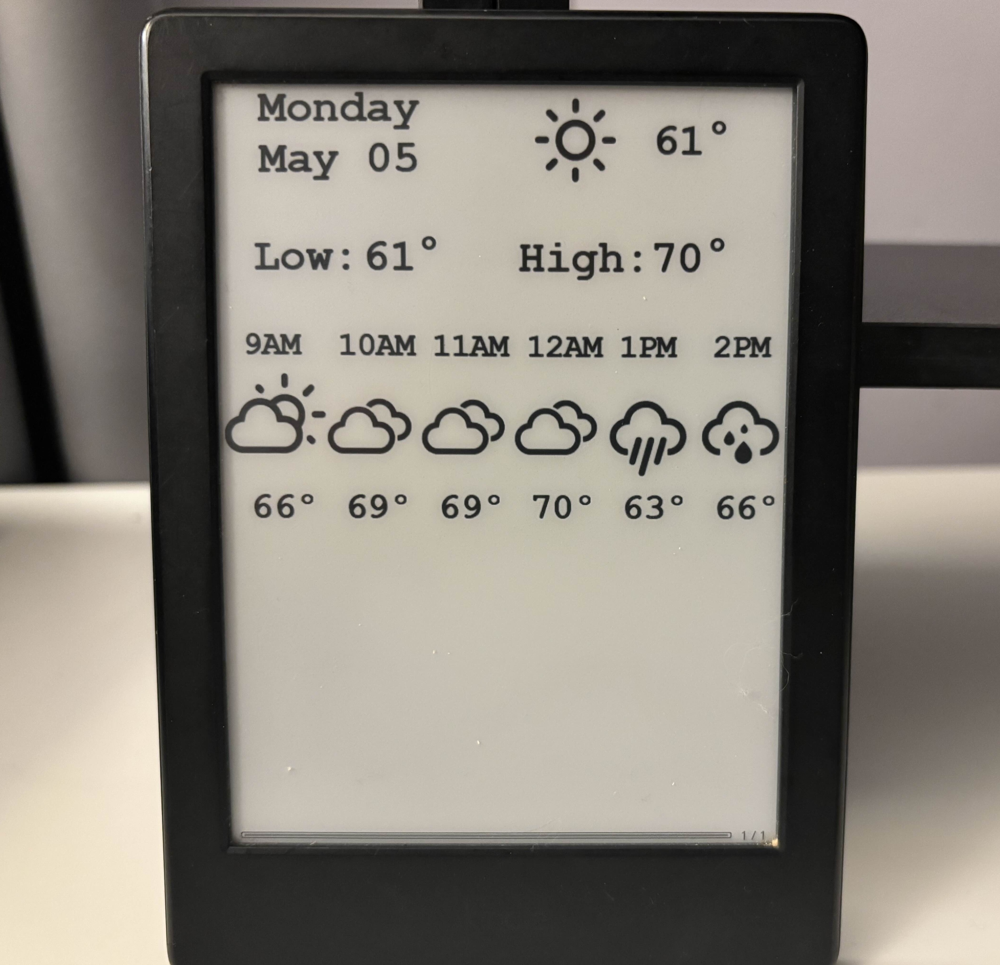
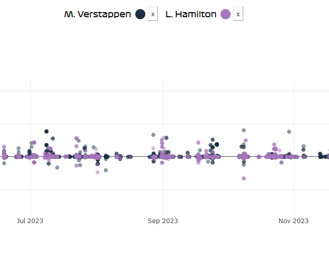

Hello!
I'm Abby Martin and I study computer science at Georgia Tech with concentrations in Systems & Architecture and Devices (Graduating with BS + MS in May 2027).
I'm interested in computer architecture, operating systems, high performance computing, and embedded systems!
Skills
- Languages: C, C++, Python, Java, Go, Rust, TypeScript, JavaScript, HTML/CSS, VHDL, Assembly
- Development Tools: Git, Docker, Bash, GDB Debugger, Linux, PlatformIO, eBPF
Experience
Boston Scientific
Software Engineering Intern
August 2025-December 2025
- Software development for Cardiac Electrophysiology
Splunk
Software Engineering Intern
May 2025-August 2025
- Structured Storage Team - KV Store Infrastructure
- C++, MongoDB, PostgreSQL
Digital Design Lab (ECE 2031)
Teaching Assistant
January 2025-April 2025
- TA for lab course on digital design, FPGAs, VHDL, and assembly programming.
The Hive Makerspace.
Director of Communications and Master Peer Instructor
January 2024-Present
- Assist students with 3D printing, laser cutting, and electronic prototyping at Georgia Tech's ECE makerspace.
- Organized technical workshops and managed communications + newsletter with over 2,000 subscribers.
Howard Hughes Medical Institute: Janelia Research Campus.
Research Intern at the Dennis Lab
June 2023-August 2023
- Trained pose estimation models using DeepLabCut and Python to track animals in videos for the Dennis Lab.
- Designed and programmed all-terrain robot for RFID data collection and field research with Arduino and C++.
Projects
Breadboard Bakery
Project Repo
Take a photo of a breadboard with wired logic chips and generate a gate-level schematic. Created for HackGT 11.
Built with: Python, OpenCV, React
Xv6 Kernel Programming
Coursework for CS 3210: Design of Operating Systems at Georgia Tech. Developed features for Xv6, a Unix based operating system.
Implemented copy-on-write forking, scheduling algorithms, support for kernel threading, users/passwords, and file system security in C.
Built with: C, QEMU
E-Ink Dashboard
Project Repo
Dashboard display with daily weather forecast and incoming train arrival times for modded Kindle e-ink tablet.
Built with: Python, Flask, Bash
GTernal Robot
Helped develop ground robot for Georgia Tech's Robotarium, a remote-access swarm robotics lab with 2,000+ users. Worked on migrating software to ROS 2 and improving sensor integration in firmware.
Built with: C++, Python, PlatformIO
Bubble Turret
Project Repo
Prototype of an aimable bubble shooting device for penguin enrichment at the Georgia Aquarium.
Built with: C++, Arduino, Python
F1 Sentiment Championship
Project Repo
Social media sentiment analysis and visualization for Formula 1 drivers during the 2024-25 season.
Created for Hacklytics 2024.
Built with: Python, JavaScript, Natural Language Toolkit
In Progress
Projects I'm working on and topics I'm learning!
eBPF IPC Monitoring
Learning eBPF (extended Berkeley Packet Filter) for low-overhead kernel/network metrics.
Working on an application to trace inter-process communication, hooking into kernel system calls for pipes and Unix sockets.
Built with: C, Go, libbpf, ebpf-go
Thanks for visiting!